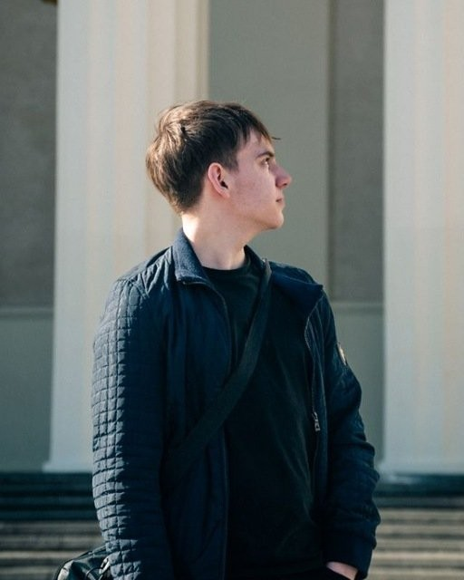

Фотоаппарат
Nikon D3300
Компактная зеркальная камера формата DX: 24,2 Мп, оптический видоискатель и лёгкий корпус - удобно снимать целый день, не снимая камеру с шеи.
Портфолио фотографа
Меня зовут Георгий. Снимаю портреты, улицу и город - без шаблонов и постановки ради постановки, только живой кадр и внимание к деталям.
Работы
Выберите категорию или просто листайте. Клик по кадру открывает его во весь экран.
В этой категории пока нет фотографий.
Техника
Всё, чем снимаю - от портрета до уличных кадров.
Фотоаппарат
Компактная зеркальная камера формата DX: 24,2 Мп, оптический видоискатель и лёгкий корпус - удобно снимать целый день, не снимая камеру с шеи.
Объективы
Вспышка
Накладная вспышка для импульсного света - помогает вытянуть портрет в тёмном помещении и добавить жёсткий графичный свет на выезде.

Обо мне
Снимаю портреты, улицу и город. Начиналось всё с обычных прогулок с камерой, а сейчас это ещё и «World In Focus» - телеграм-канал, куда я выкладываю то, что зацепило.
Работаю на естественном свете, но не боюсь импульсного. Перед съёмкой всегда обсуждаем идею, место и образ, а после - помогаю выбрать лучшие кадры.
Контакты
Напишите, что хотите снять и когда вам удобно - отвечу и предложу варианты.
Съёмки в городе и за его пределами · новые кадры - в канале «World In Focus»